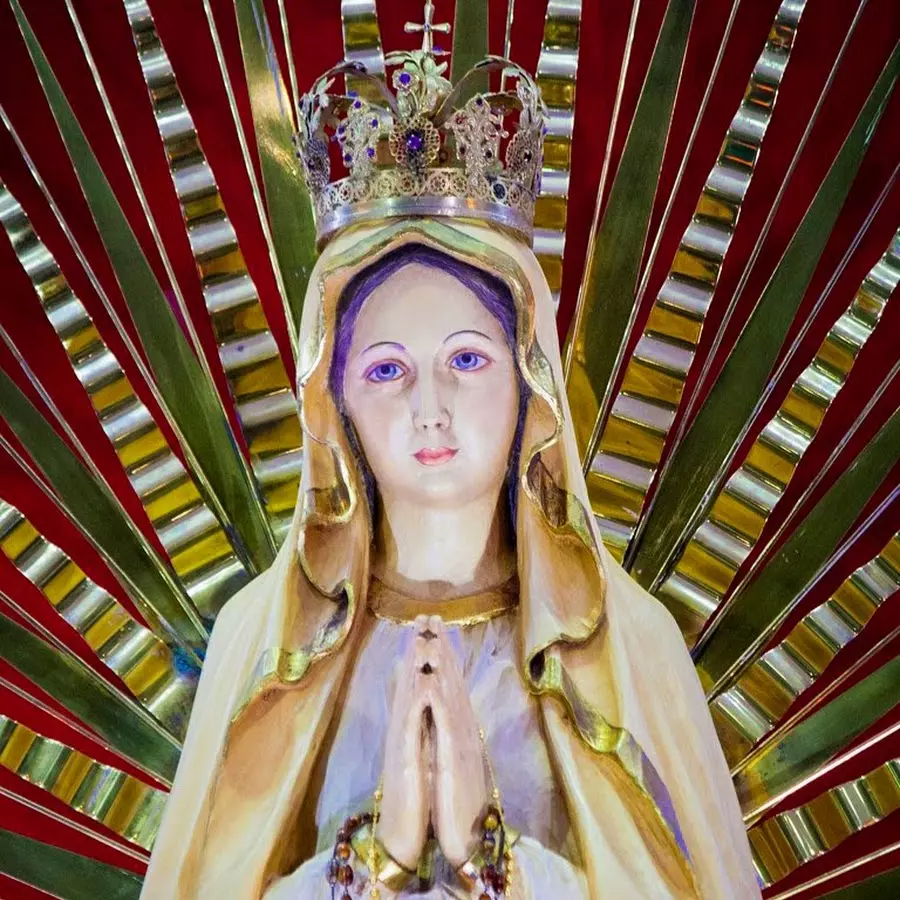

Our Beloved Lady, Mother of Victory
Mother of Victory Shrine – Tikujiniwadi, Thane, Maharashtra – India (Diocese of Kalyan)
The Syro-Malabar Catholics who migrated from Kerala and settled in and around Thane initially depended on the local Latin churches viz. St. John The Baptist Church, Thane and Our Lady of Mercy Church, Vartak Nagar for their spiritual needs.
In the sixties Kerala Catholic Association brought Malayalee Catholics belonging to Syro-Malabar, Syro-Malankara and Latin rites together and with a view to preserving the cultural and spiritual traditions of Kerala, they started organizing annual retreats, confessions, Good Friday services and Holy Mass in Malayalam at regular intervals, under the pastoral care of Capuchin fathers.
Diocese of Kalyan was erected on April 30, 1988 by Pope John Paul II, with Msgr. Paul Chittilapilly as its first Bishop. Even before the erection of Kalyan Diocese, priests belonging to Syro Malabar Church had started efforts to unify all Syro Malabar Catholics.
Fr. George Edakkalathur started various activities and prayer services at Majiwada and Manpada and co-ordinated the faithful in the area and started Holy Mass in these two centres.
To further nurture and nourish these parishes of Majiwada and Manpada and lead them forward on the path of faith, various priests were given the charge for specific tenures, viz., Fr. Thomas Kalapura, Fr. Vincent Parayil, Fr. Jacob Edakkalathur, Fr. Johnson Olakkengil, Fr. Thomas Choondal and Fr. Paul Pulikottil.
All of them had put in their best efforts for the development of these two parishes. By the year 2001, under the leadership of Parish Priest Fr.George Porathur and with support of Asst Vicar, Fr. Justin Kallely of Thane, Varthak Nagar, Majiwada & Manpada, the parishioners of Majiwada and Manpada decided to come together to have a common parish.
To make the community spiritually unified and more prayerful it was necessary to combine different activities of Majiwada and Manpada and establish a common parish. Seeing the increasing population and other related difficulties in carrying out the church activities, Bishop Mar Thomas Elavanal gave his consent for combining these two parishes.
Accordingly a committee was formed from 120 families, who worked relentlessly for the fulfilment of the dream of establishing an independent parish by the name of Blessed Kuriakose Elias Chavara Parish and started searching for a suitable place. The untiring efforts put in by Fr. George Porathur and Fr. Justin Kallely to boost people’s morale and lead them to success, would always remain etched in the minds of the parishioners. In the year 2002, Fr. Justin Kallely was transferred and Fr.Rajesh Mathew was given the charge as Asst Parish Priest.
On 22nd December of 2002 the historical event of the blessing of Bl.Kuriakose Chavara Community Centre took place in the auspicious presence of Vicar General Msgr. Thomas Thalachira. This achievement was made possible mainly because of the fervent prayers of the community and tireless efforts of Fr. Rajesh Mathew along with trustees, Mr. K.T. Varghese and Mr. E.P. Francis and committee members.
On 2nd February 2003 the Parish received the highest recognition in the diocese of Kalyan. The holy statue of Mother of Victory was brought to this Church from the well known pilgrim centre of the Blessed Virgin Mary at Wigratzbad in the Diocese of Augsburg, Germany. It was unveiled by Mar Thomas Elavanal, Bishop of Kalyan Diocese in the presence of Fr.Thomas Maria Rimmel, Director of Pilgrim Centre, Wigratzbad and the church was declared the first Marian Pilgrim Centre of Kalyan Diocese and was named Mother of Victory Shrine. Fr. Rajesh Mathew was appointed the first Rector.
{kind=link}
{kind=link}
Leader
Our Erstwhile Shepherds
{kind=link}
{kind=link}
{kind=link}
{kind=link}
{kind=link}
{kind=link}
{kind=link}
{kind=link}
{kind=link}
{kind=link}
{kind=link}
Vicar
{kind=link}
Fr. George Porathur
2001 – 2003
{kind=link}
Fr. Rajesh Paruthipallil
Vicar Feb 2003 – Jan 2004
↑ from Asst. Vicar (2002–03) · First Rector
{kind=link}
Fr. Justin Kallely
Vicar Jan 2004 – Jun 2005
↑ from Asst. Vicar (2001–02)
{kind=link}
Fr. Kuriakose Kalaparambath
Jun 2005 – May 2009
Asst. Vicar
Fr. Justin Kallely and Fr. Rajesh Paruthipallil both served as Asst. Vicar before being elevated to Vicar. See their cards on the left.
Contact
Contact Us
Email:
WhatsApp:
Address:
27 Acre Kothari compound, Smt Gladys Alvares Road
Manpada, Behind D-Mart, Thane, Maharashtra 400610